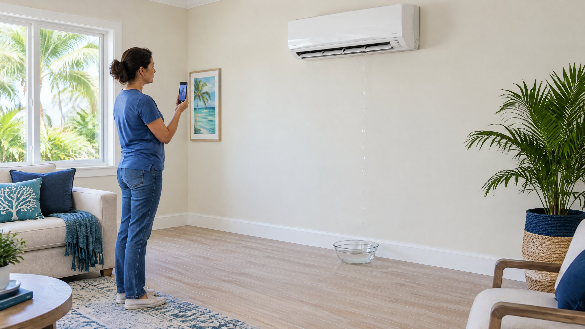

The Indoor Head Should Collect Water, Not Spill It
During cooling, moisture can condense on the indoor coil. The water is called condensate, and the indoor head has a pan and drain connection to carry it away. Carrier describes this collection and drainage arrangement in its Mini Split leakage guidance. Water running down the wall or onto the floor is not the intended discharge path. [1]
Do not confuse a water leak with a refrigerant leak. A puddle below the head does not identify which component failed or establish that refrigerant must be added. Carrier identifies several possible drainage and icing contributors. The useful next step is to trace where the water should have gone and what prevented that, not select a part from the puddle alone. [1]
Stop the Leak Trial and Arrange Assessment
Turn the affected unit off with its normal remote or controller if you can do so without approaching wet electrical equipment. Keep people and belongings away from the wet area and request an AC repair assessment. Do not repeatedly restart cooling to demonstrate the leak, or open the head to find the pan. Carrier recommends professional service for water leaking from or near the indoor unit, freezing and reduced airflow. [1]
A bowl or towel may collect visible drips, but it is not a repair or permission to keep operating. Do not touch wet outlets, switches or appliance wiring. If water has reached electrical equipment or building materials are deteriorating, tell the service provider and request appropriate urgent qualified help for those conditions too.
EPA recommends addressing water problems promptly and reducing the moisture source, rather than treating only the visible wet surface. A stopped drip does not by itself confirm that concealed wall materials are dry. Ask whether a separate building assessment is needed; an equipment repair does not automatically include wall restoration. [3]
Drainage, Pan Condition and Icing Are Different Findings
Carrier lists blocked or kinked drain piping, pan damage and improper drainage as possible contributors. Its guidance also identifies restricted airflow and refrigerant-related conditions as possible reasons for ice that later melts. These are inspection possibilities, not a ranking of causes for your home. [1]
A clean-looking filter does not establish that the drain is blocked, and a wet wall does not prove the pan needs replacement. If ice or weaker cooling accompanied the leak, report both. For the separate icing question, see why ice can form on an AC refrigerant line. Do not chip ice, apply heat or change refrigerant yourself.
If the technician confirms a drain obstruction, ask about the relevant condensate drain cleaning scope. Clearing an obstruction is different from repairing a damaged pan or correcting a drain connection. Our recurring drain-blockage article addresses what to investigate when that specific problem returns.
Report the Head, Timing and Recent Changes
From an accessible dry location, note which indoor head is affected, where water first appears and whether cooling or Dry was selected. Record the model if it is already available in your documents; do not climb or remove panels to read a label. A photograph of the visible water location can help the appointment discussion without recreating the leak.
Tell the provider whether the problem started after installation, a service visit or a control change. Include any warning message, reduced airflow or visible ice you noticed before shutdown. These observations help define the inspection; they do not prove installation error, filter neglect or a failed sensor.
If more than one head shares an outdoor unit, explain the arrangement and which heads were operating. Ask the provider how the system should remain off pending assessment. Do not assume that changing another head's settings will resolve the leaking unit or that each head can be treated as a completely separate appliance.
Ask What the Drainage Check Actually Established
PNNL's ductless installation guidance calls for correctly installed condensate lines and pans and testing the system's operating modes. For an existing leak, a useful service explanation should connect the observed water path to the condition found and the correction performed. This is not a homeowner instruction to detach piping or reposition the indoor head. [2]
Ask whether the inspection found an obstruction, damaged connection, pan defect or another water source. If the system has a condensate pump, ask whether its operation was checked; do not assume every installation has one. The applicable equipment instructions and actual drain layout should determine the work, not a universal slope or drain-clearing recipe borrowed online.
Before resuming normal operation, ask how the technician verified drainage and whether additional airflow or icing concerns remain. Keep the service notes identifying the affected head and completed work. A temporarily dry cabinet alone is not an explanation of why water escaped or whether the intended drainage path now works.
Dry Mode and Filter Care Do Not Replace a Leak Assessment
Dry is a moisture-removal operating choice, not a method for repairing water escaping indoors. Our Dry versus Cool explanation covers model-specific controls. Switching modes or lowering the target temperature does not identify a blocked drain or repair a broken connection.
Follow the installed model's filter-care instructions after the immediate leak concern is addressed. Do not assume all filters are washable or use another product's cleaning schedule. Carrier's restricted-airflow explanation makes filter condition worth checking, but a filter change alone does not establish that the pan, connections and drainage are working. [1]
Frequently Asked Questions
Is water from the outdoor condensate outlet the same as an indoor leak?
No. A correctly routed condensate outlet carries collected cooling moisture away. Water escaping from the indoor head onto the wall or floor is outside that intended path and deserves assessment. Identify the location rather than treating all dripping as the same symptom.
Does water below the Mini Split prove low refrigerant?
No. Drainage and pan problems can also cause indoor leakage. Icing can involve airflow or refrigerant-related conditions, so a technician should distinguish the findings before recommending refrigerant work or replacing a component.
Can I switch to Dry mode and keep using the leaking head?
Do not use a mode change as a leak-repair strategy. Stop the affected unit using normal controls and request assessment. Dry operation does not repair an obstructed drain, damaged pan or disconnected drain fitting.
Does an indoor Mini Split leak mean the whole system needs replacement?
Not from that symptom alone. Ask what condition was found, what correction is proposed and how drainage will be checked afterward. Any broader replacement recommendation needs its own explanation, not simply the presence of water.
Editorial Source Review & Publisher
Published by On The Way Heating & Air. This local, family-rooted company's homeowner explanation uses manufacturer leakage guidance, national-laboratory installation guidance and federal moisture advice. It is not an inspection, an all-model repair procedure, a refrigerant diagnosis or a promise that one drain service resolves every indoor leak.
Sources
- Carrier — Mini Split Leaking Water: Diagnosis and Repair. Condensate collection, possible drainage/pan/icing contributors and professional assessment; no adoption of DIY steps, numerical slope rules or all-model maintenance intervals.
- PNNL Building America Solution Center — Ductless Mini Split Heat Pumps. Correct installation of condensate lines and pans and operating-mode checks, not a remote diagnosis or homeowner service procedure.
- EPA — A Brief Guide to Mold, Moisture and Your Home. Water-source correction and functioning condensate drainage; no identification of mold or health/remediation advice.